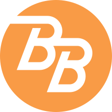
To commemorate the band's 60th anniversary I had the opportunity to redesign the logo last updated during the early seventies.
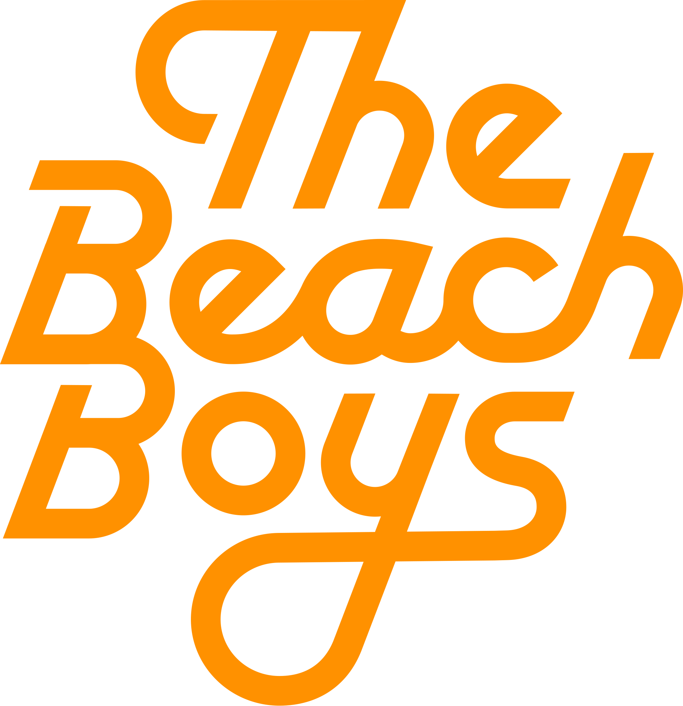
More recently they were acquired by Paypal. Prior to that I had the opportunity to work on a redesign of their existing landing pages.
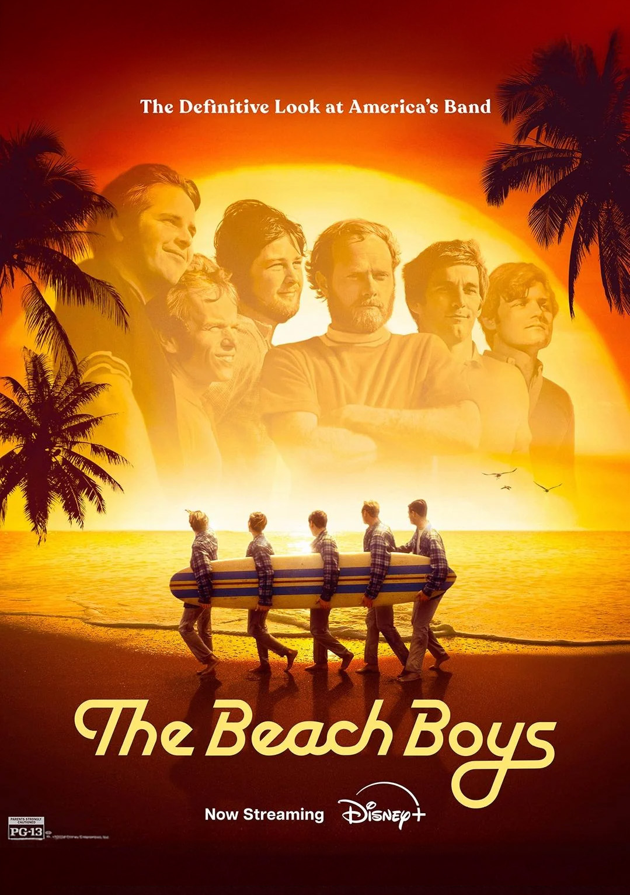
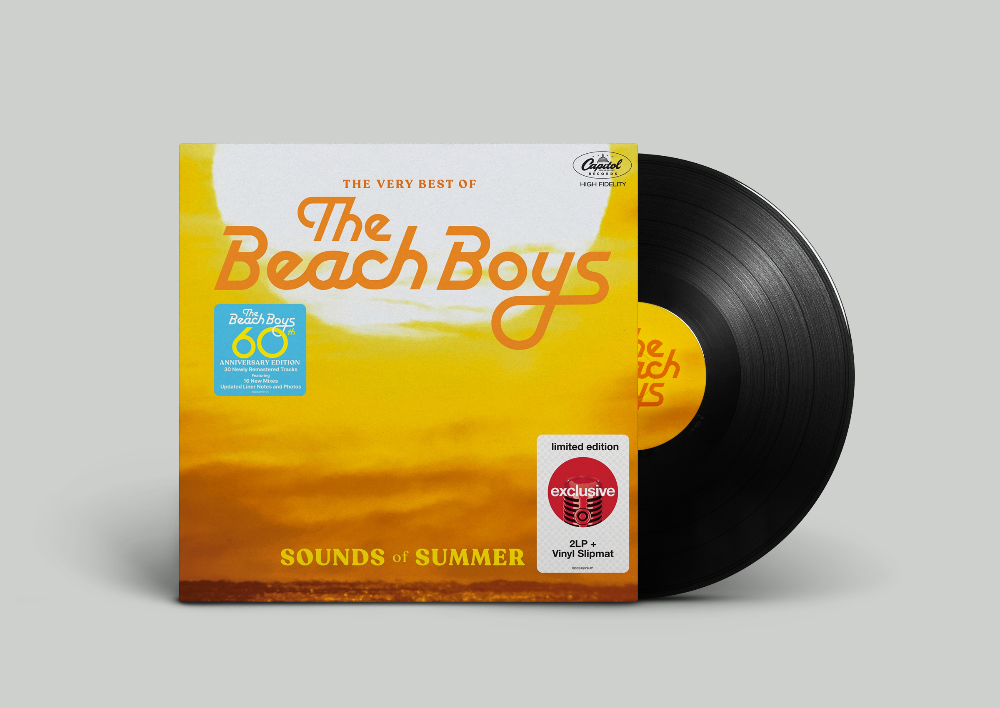
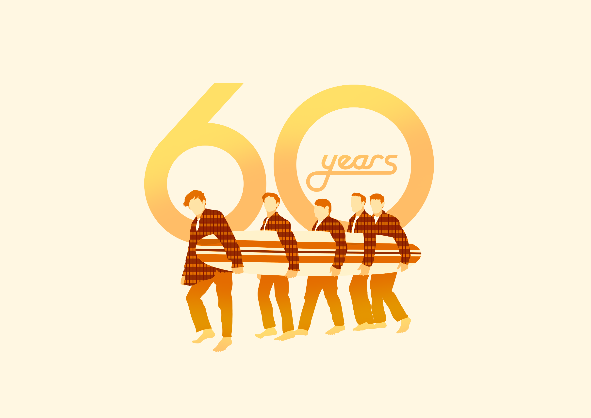
When I was a kid my dad would put Pet Sounds on the record player and I'd get lost in the complex and catchy harmonies. Decades later getting a chance to work with the band was something special for me.
My initial logo concepts we're too on the nose. Using Cooper Black, the font from the Pets Sound's album cover, or mimicing type styles from late 60's surf culture made for a dated vintage look. These early explorations pointed us towards a direction that leaned modern but remained timeless and futureproof.
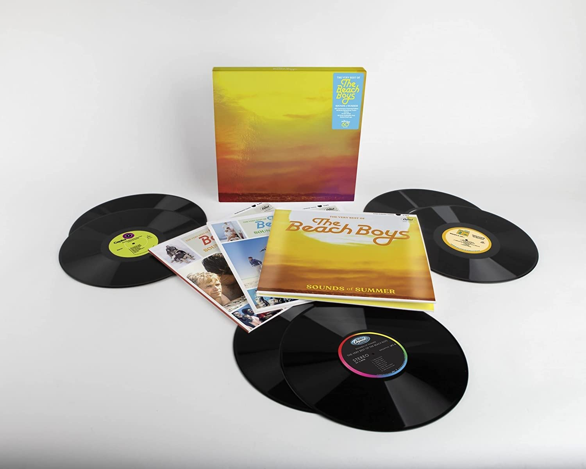
The first application of the logo was for the reissue of the
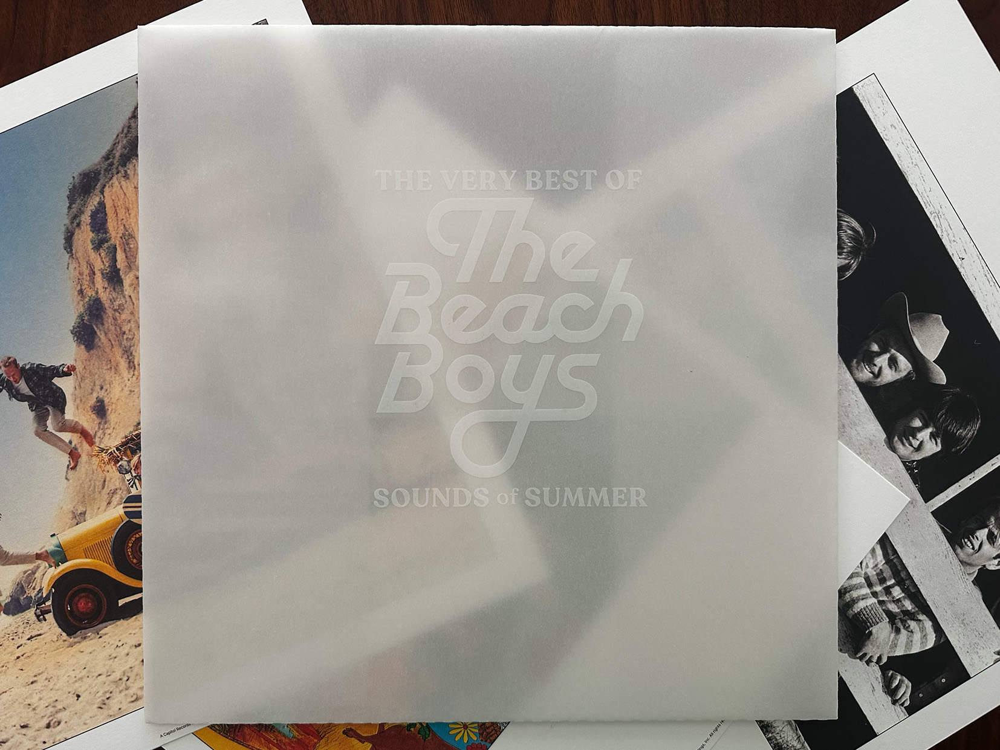
Next up the logotype was used for the release of the documentary movie on Disney +. While the horizontal format of the logo worked better in certain applications, I felt like the stacked version had more balance and presence.
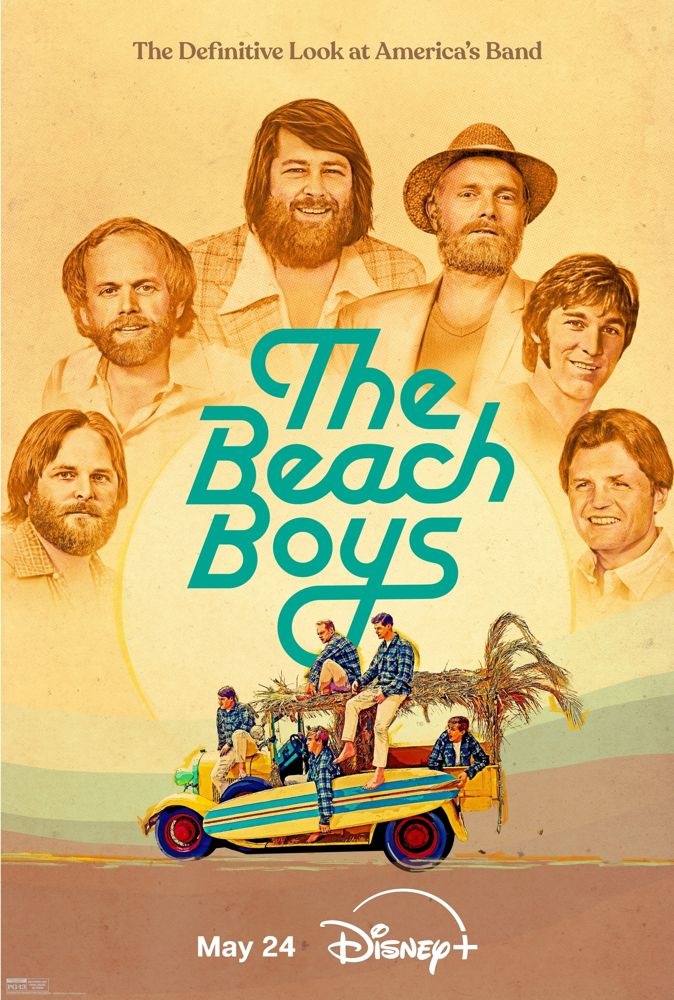
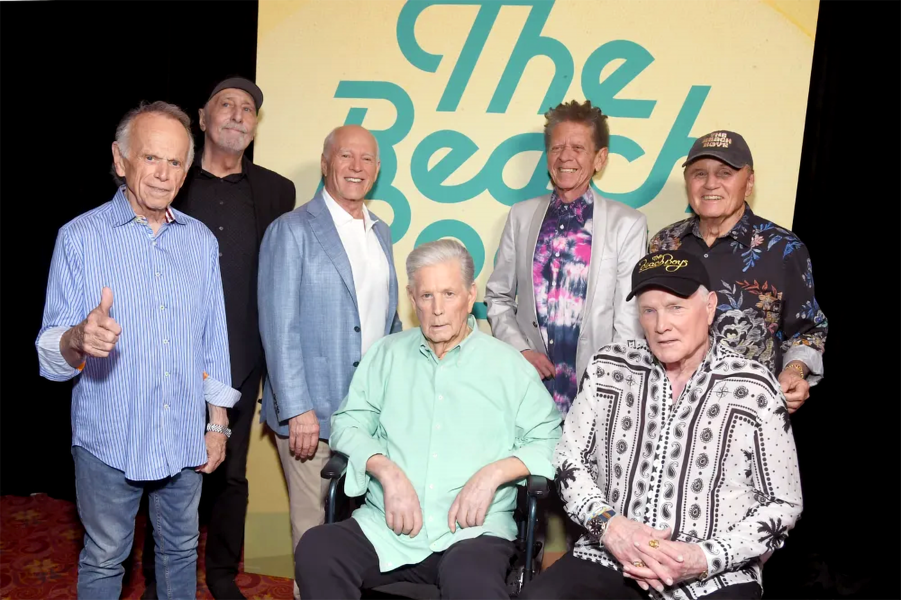
I don't think I've ever had a logo used on such a wide range of products. From apparel to coloring books to effects pedals, it seemed to have good of reach. It's always a trip to organically find your logo out in the wild. Below are a couple examples of it in use.
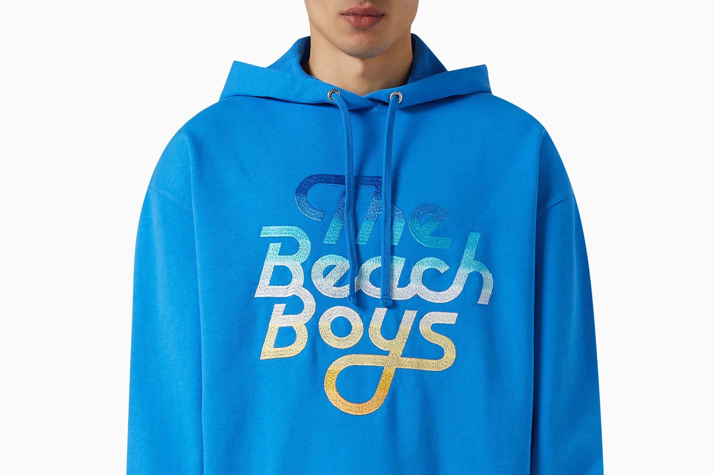
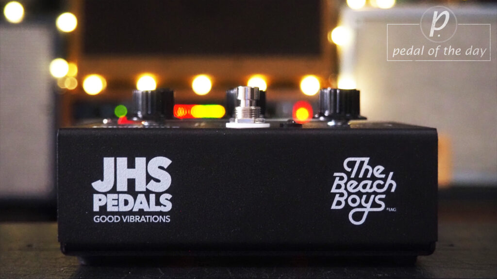